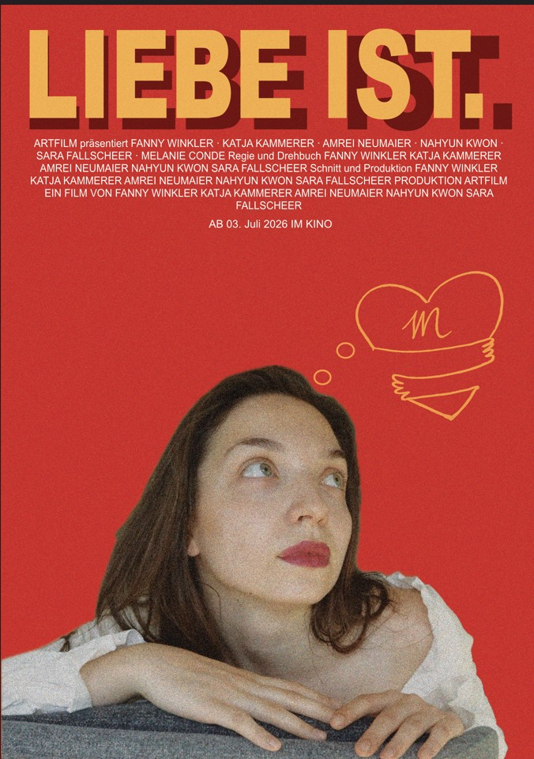
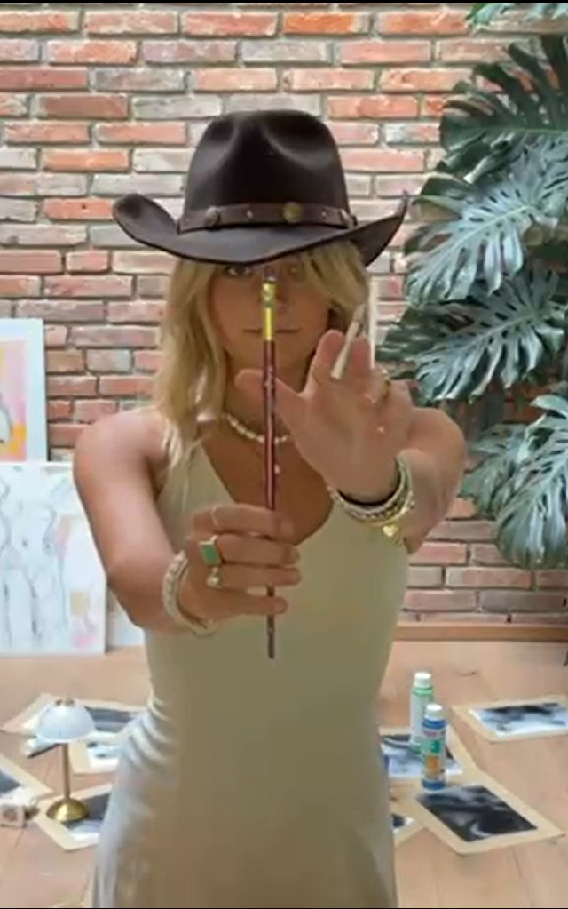
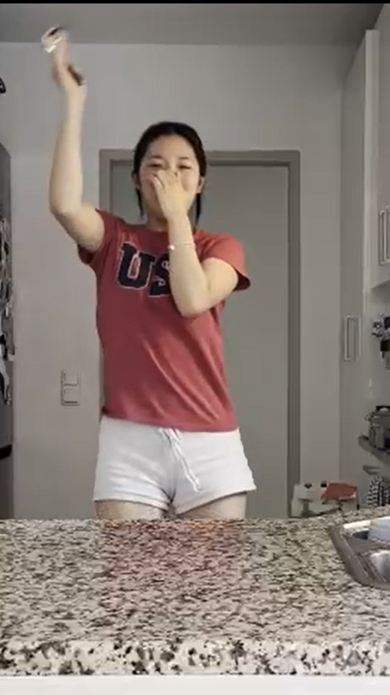
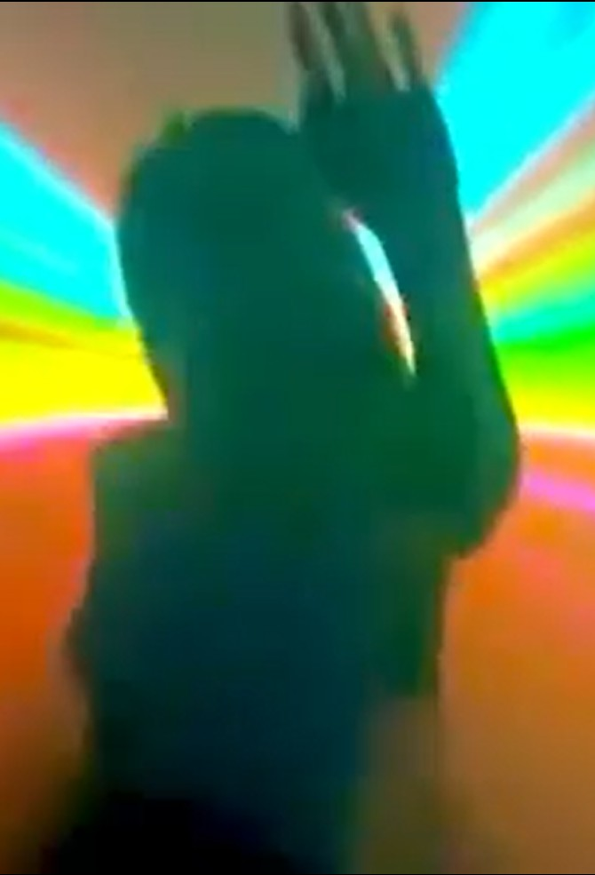

Die Verbindung zu einer anderen Person
Unsere erste Assoziation zu Liebe und Zuneigung, die stumme Verbundenheit zwischen zwei Menschen im Trubel der Stadt.

Fünf Charaktere. Fünf Antworten auf die Liebe.




